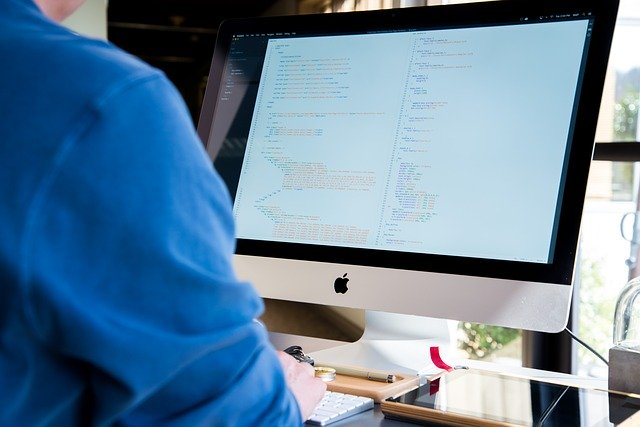

Las computadoras hoy en día tienen demasiada utilidad ya que en internet se encuentra demasiada información la cual es muy util para estudiantes o incluso trabajadores.
El CPU es la parte donde se conecta el mouse, teclado entre otros en el se encuentra la memoria, es la parte principal de la computadora ya que en el se encuentra el disco duro.
El monitor es donde se visualiza todo lo que esta dentro de la computadora un ejemplo pueden ser las páginas web.
Es el dispositivo que contiene letras y números y que nos permite ingresar informacion escrita a la computadora.
Dispositivo de interfaz humana que nos permite por medio de un cursor seleccionar o mover cualquier elemento en una pantalla de computadora .
La impresora es un dispositivo periférico de salida del ordenador que nos permite imprimir imágenes y documentos.